A 74-series discrete logic ALU performing arithmetic and boolean operations with custom carry-lookahead timing optimization.
Offline NAS Media Server
Personal use media server framework designed for local offline streaming, file management, and system administration across intranet devices.
PHPLinuxApacheSelf-Hosted
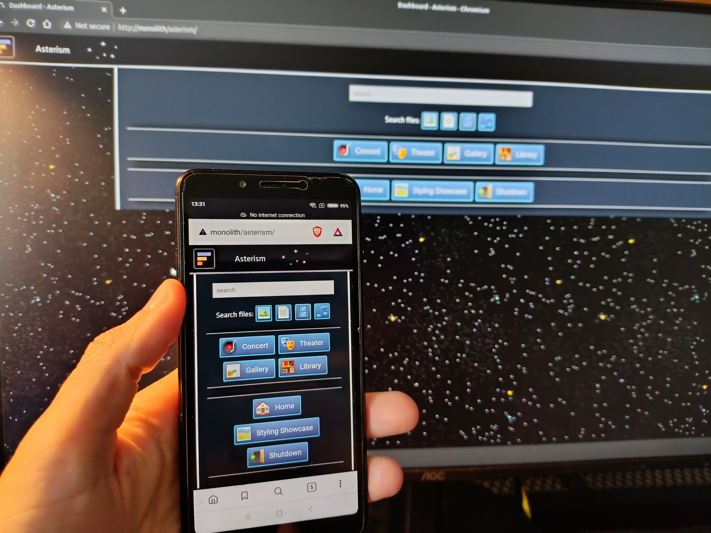
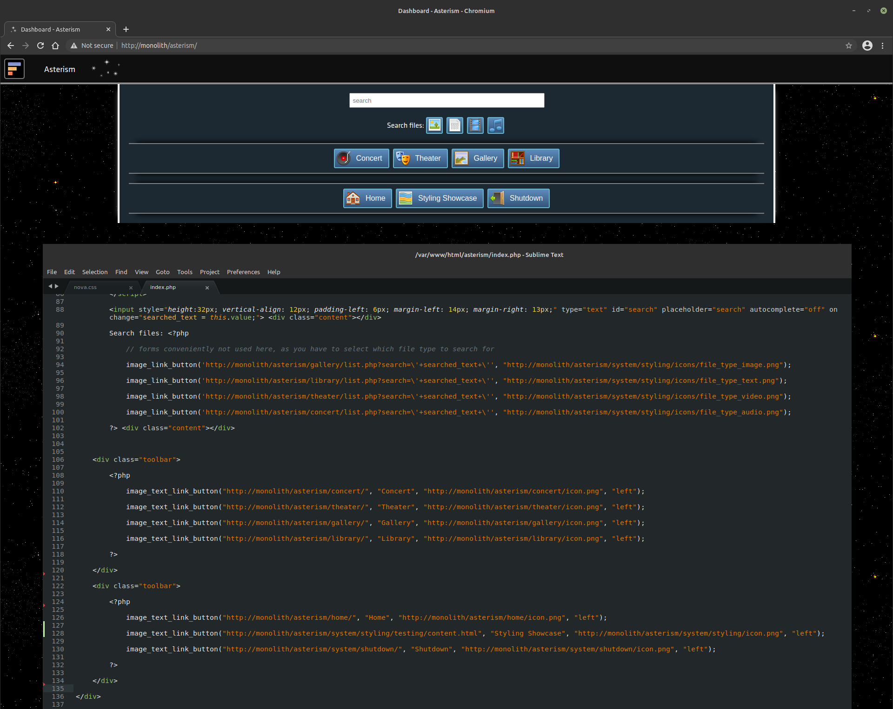
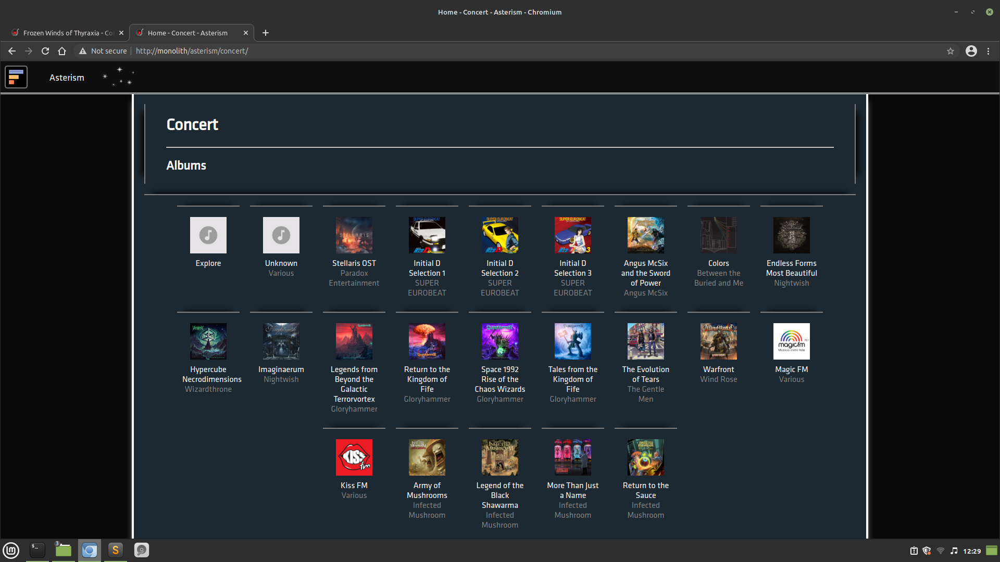
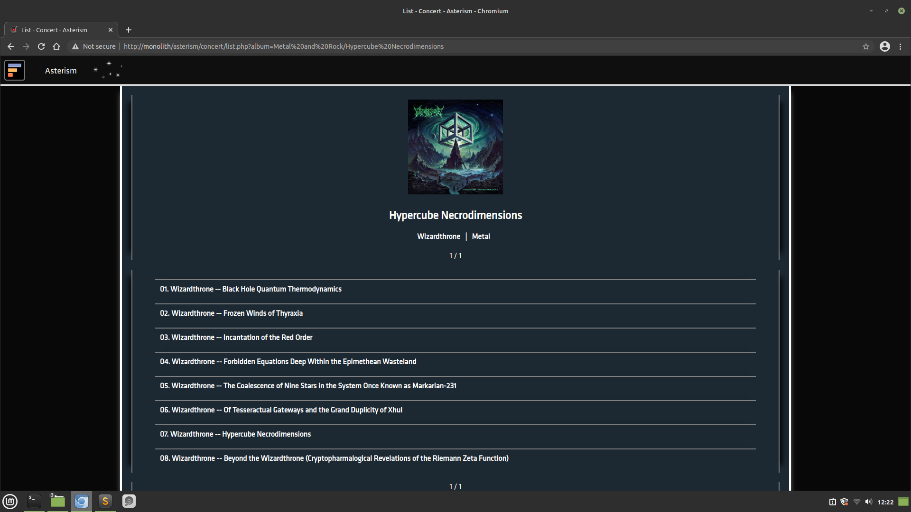
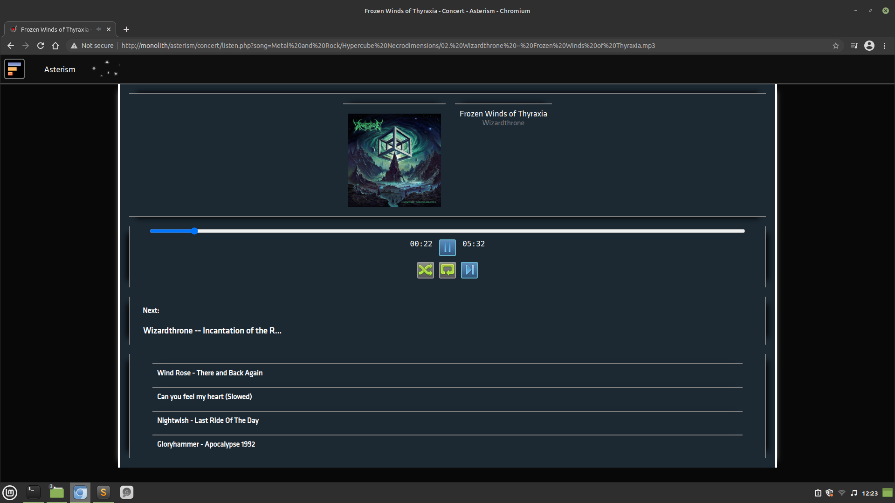
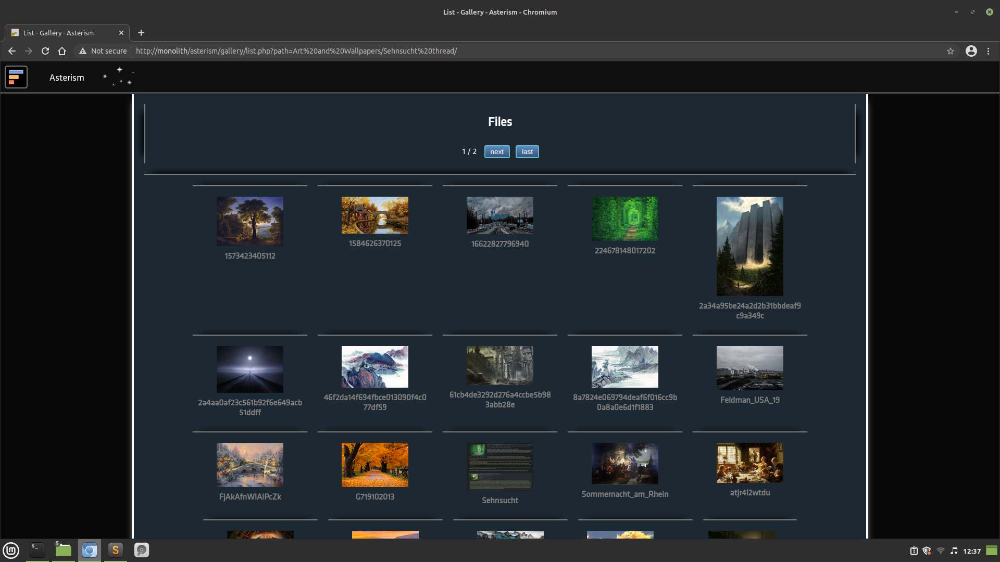
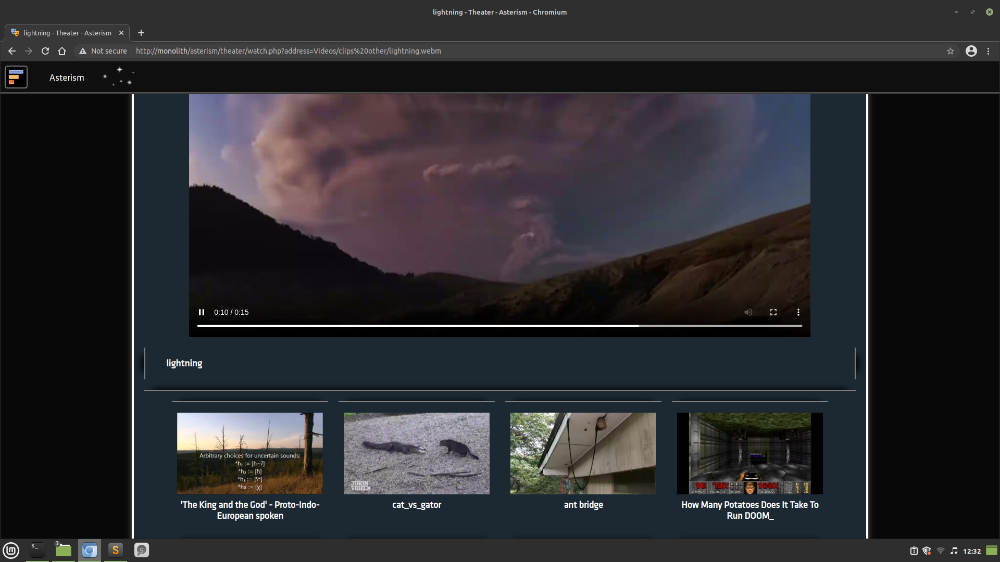
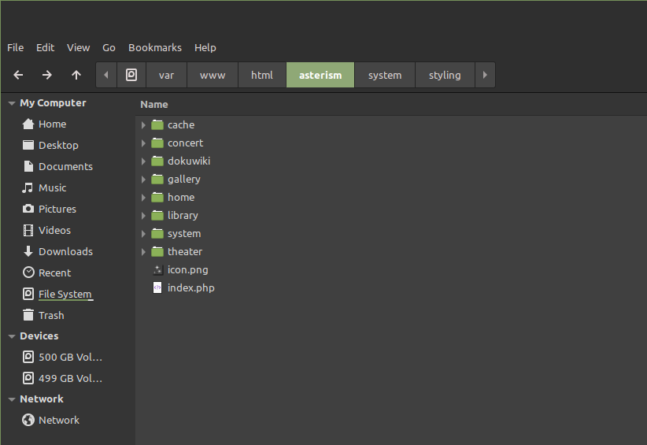
Iteratively built to operate completely offline, this self-hosted media suite streams video, audio, and files across desktop and mobile devices. Avoiding streaming services and eliminating heavy third-party dependencies, the platform leverages a native PHP, Bash, and Linux architecture to deliver dynamic recommendation engines, customizable UI, and remote network system controls.
Highlights
Custom Dependency-Free Web Architecture: Built a lightweight, self-contained web framework using pure HTML/CSS, PHP, and Apache on Linux, avoiding third-party front-end libraries to maximize efficiency and stability.
Algorithmic Recommendations: Developed specialized audio ("Concert") and video ("Theater") modules featuring genre-filtered queries, radio-style shuffle algorithms, and contextual video recommendations.
Automated File Indexing and Media Processing: Created back-end pipelines to systematically index the local filesystem ("Firmament"), generating dynamic media thumbnails, file previews, and structured album layouts on the fly.
Linux System Integration and Remote Controls: Wrote custom Bash and PHP system scripts allowing secure OS-level administration (rsync, shutdown) directly through the web interface.
Desktop Control Using an Enhanced USB Mouse Interface
Open-hardware, high-performance gaming and productivity computer mouse.
RP2040 / C++Hardware DesignPMW3360 Optical SensorUSB StackErgonomics Research
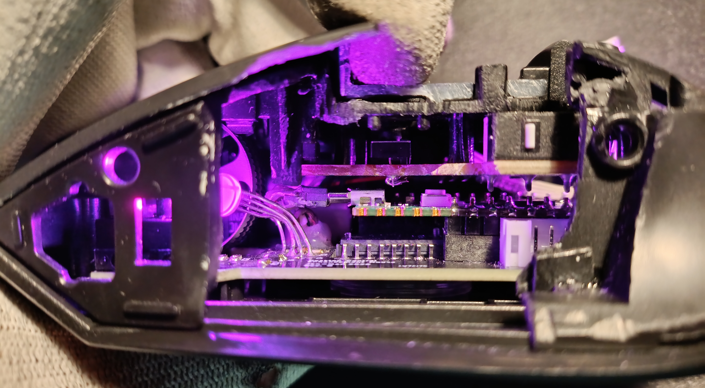
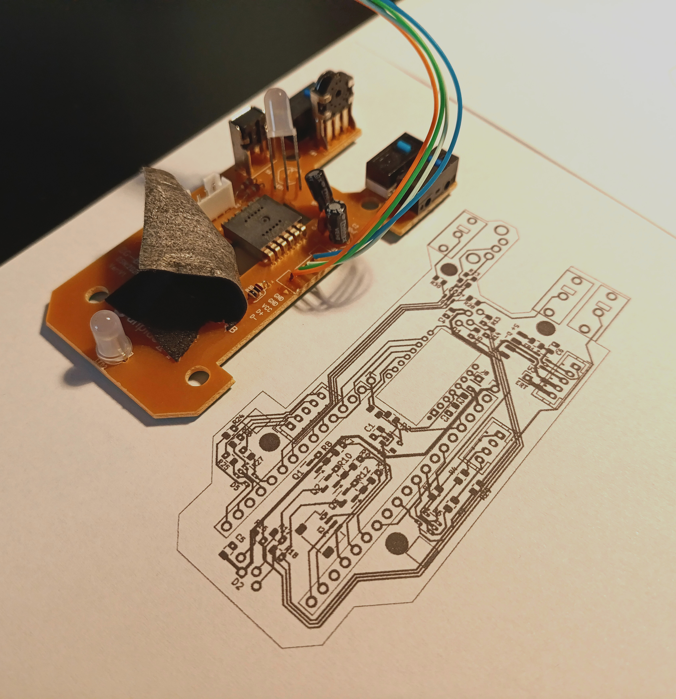
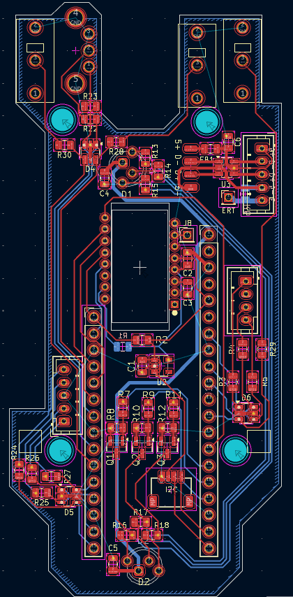
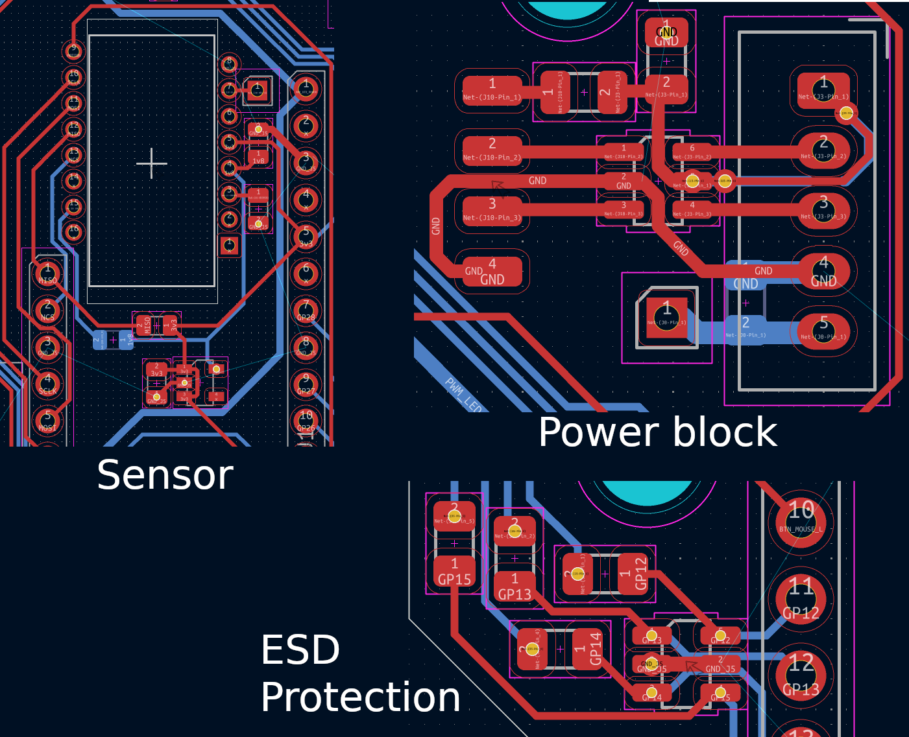
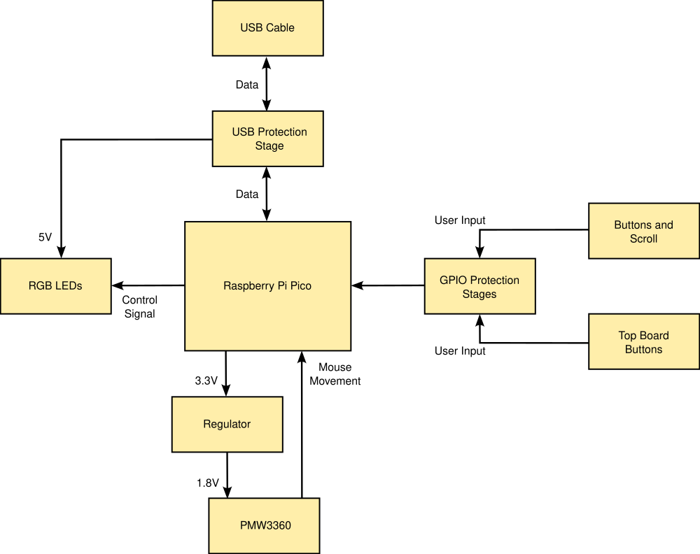
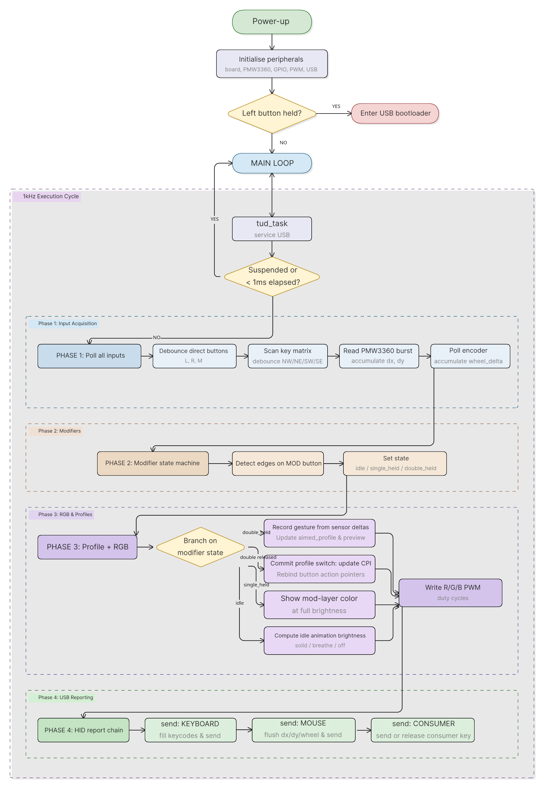
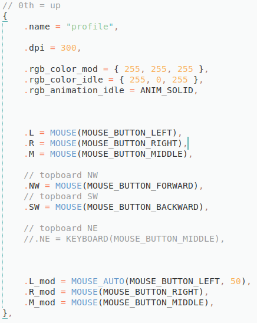
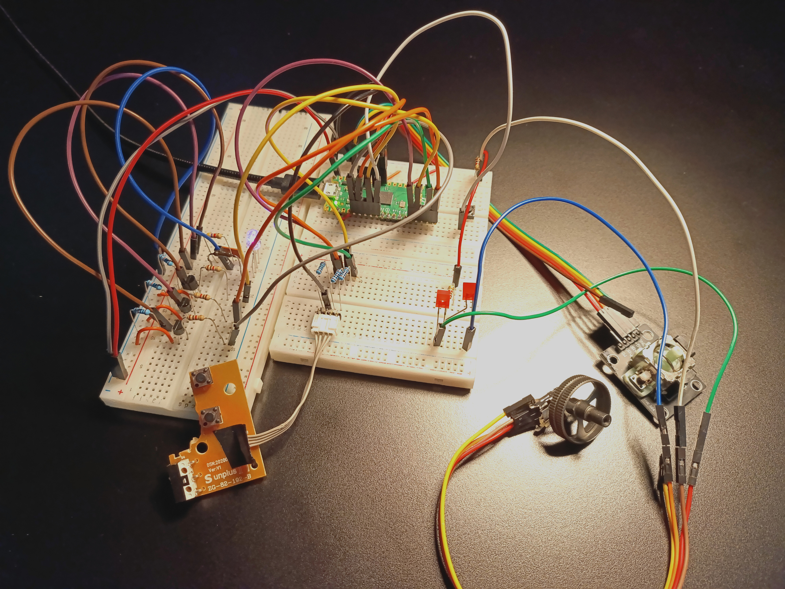
My Bachelor's Thesis investigates the biomechanical and technical feasibility of integrating a thumbstick into a precision mouse chassis to offload directional movement from the keyboard hand. While iterative prototyping determined that biomechanical coupling between the thumb and wrist renders simultaneous dual-analog input impractical for high-precision tasks, the project successfully produced a fully operational, professional-grade open-source mouse platform. Engineered to match commercial esports peripherals, the resulting device pairs high-tier optical tracking with robust hardware protection and modular embedded architecture, serving as an unlocked development platform for human-computer interaction research.
Highlights
Custom Hardware and Carrier PCB: Designed a carrier board interfacing a Raspberry Pi Pico (RP2040) with a PixArt PMW3360 optical sensor, incorporating dedicated ESD protection circuits and an integrated RGB status-feedback system.
Low-Latency Embedded Firmware: Developed high-throughput C/C++ firmware leveraging TinyUSB to achieve a 1000 Hz USB polling rate, configurable contact switch debouncing (1 ms to 20 ms), and profile selection routines.
Biomechanical and Ergonomic Research: Conducted empirical usability testing on dual-input chassis prototypes, producing an ergonomic case study documenting how thumb stabilization constraints limit multi-surface mouse controls.
Modular Platform Expansion: Engineered a fully unlocked hardware architecture featuring broken-out GPIOs, 3 unallocated ADC channels, an I2C/Stemma expansion footprint, and a socketed MCU structure for future revisions.
Designed to blend the arcade flight mechanics of Ace Combat with open-world space trading loops, this project serves as a technical showcase of Blueprint systems architecture, vector math applications, and scalable gameplay frameworks in UE5. Every core mechanic, from physics-driven ship handling to UI spatial projections, was engineered from scratch with a heavy focus on modularity and math-driven gameplay systems.
Highlights
Ballistic Lead Math: Triangulates relative velocity vectors and projectile speed to calculate exact predictive lead angles for cannon auto-aim.
Finite State Machine AI: Evaluates target positions to drive 5 dynamic combat behaviors, using offset waypoints and skill scaling to prevent endless circling in dogfights.
Elliptical HUD and Radar Math: Uses 2D rotation matrices for radar tracking and projects 3D target vectors onto a 2D screen ellipse to dynamically guide off-screen tracking.
6-DOF Flight Physics: Combines simple horizon-locked controls with full 6-Degrees-of-Freedom flight, dynamically linking turn rates to current ship velocity.
Modern Architecture Facade Segmentation
A U-Net semantic segmentation model designed to classify architectural elements on modern building facades.
Trained on the Irregular Facades dataset, this computer vision project automates multi-class facade recognition across six structural classes. The pipeline leverages specialized data augmentations, a custom U-Net encoder-decoder architecture, and weighted validation metrics designed to tackle severe spatial class imbalances.
Highlights
Weighted IoU Evaluation: Utilizes a custom callback to calculate Weighted Mean IoU at epoch-end, accounting for extreme object size disparities to trigger optimal model saves.
Targeted Augmentation: Applies non-isotropic scaling and dimensional padding tailored specifically for architectural geometries.
Adaptive Training: Implements dynamic learning rate reduction and early stopping to prevent overfitting on complex structural shapes.
2-Bit Arithmetic-Logic Unit
A 74-series discrete logic ALU performing arithmetic and boolean operations with custom carry-lookahead timing optimization.
Prototyped in Logisim and routed in KiCad, this project implements a 4-operation ALU executing Addition, Subtraction, AND, and OR functions. The design uses discrete multiplexers and logic gates to demonstrate fundamental CPU component engineering and timing hazard resolution.
Highlights
Carry-Lookahead Adder: Engineered a 2-bit CLA to evaluate carry bits simultaneously, eliminating propagation delay race conditions inherent to asynchronous ripple-carry adders.
Two's Complement Subtraction: Implemented hardware subtraction by multiplexing inverted inputs and dynamically routing the instruction opcode bit as a +1 carry-in offset.
Instruction Multiplexing: Built a dual-stage 2-bit opcode decoder to route combinatorial gate outputs to a 3-bit LED display with dedicated addition overflow detection.
Complete EDA Workflow: Validated signal propagation and timing hazards in Logisim Evolution before designing the KiCad schematics and custom PCB layout.
MC14500 Breadboard Computer
Breadboard computer built to study processor architecture and bridge discrete digital hardware with software toolchains.
Implemented around the Motorola MC14500 1-bit logic processor, this project explores foundational computer engineering principles from low-level circuit design up to high-level code compilation. The build pairs a custom discrete logic architecture with a self-developed compiler toolchain and software-emulated arithmetic algorithms.
Highlights
Automated Compiler and Programming Toolchain: Developed a custom Python assembler and Arduino interface that compiles assembly code into binary payloads, bypassing manual DIP-switch entry to program the onboard SRAM directly.
Hardware Interfacing and Discrete Circuit Design: Engineered a 2N2222 transistor amplifier stage to resolve data bus drive mismatches and built a custom Diode XOR circuit to patch processor timing anomalies.
1-Bit Arithmetic Software Emulation: Authored software algorithms to execute 6-bit binary addition and 3x4-bit shift-and-add multiplication purely through 1-bit boolean logic primitives on a CPU lacking a dedicated ALU.
Ontology Expert System
Classified prototype for revolutionary AI paradigm.
Over the course of my university studies, I took part in an effort for the development of an expert system AI, based on structured semantic knowledge stored as ontologies, rather than the neural network approach. The project had several breakthroughs using interdisciplinary methods, such as the application of epistemology and grammar structures in order to create a program that simulates human reasoning. By accumulating an elaborate enough knowledge base, the principle is that the AI is able to formulate emergent ideas that are derived from prior principles.
Highlights
Confidential Codebase: Because several unconventional approaches were implemented to success, the research material and codebase that grew out of the project are kept confidential, as agreed upon by the members of the project, until development efforts are resumed.
Natural Semantic Structures: A unique approach was taken to the application of semantic structures, through analyzing the meaning behind spoken languages, and deriving an organized, analyzable database structure holding knowledge that can be understood by a machine.
Parsed Grammar Sentences: The knowledge base stores actual sentences instead of fuzzy logic, organized with a unique grammar that is parsed using a YACC Python script.
C++ Inference Engine: The inference engine was written in C++ and navigates the structures of the knowledge base in order to derive information which is not explicitly stored, but can be deduced.
Real-Time FFT Spectrum Analyzer
An embedded C spectrum analyzer that computes a 16-point FFT on an ATmega microcontroller using Q5 fixed-point arithmetic and visualizes real-time frequency bins on an 8x8 LED matrix.
Designed on custom AVR hardware, this project implements a Radix-2 FFT butterfly algorithm to process real-time analog signals. The system bridges digital signal processing (DSP) theory with resource-constrained embedded architecture, executing complex math entirely in integer fixed-point arithmetic without floating-point overhead.
Highlights
Q5 Fixed-Point FFT Engine: Implemented a 16-point, 4-stage Radix-2 butterfly algorithm using Q5 fixed-point complex numbers (scaled by 32) to compute spectrum transformations via fast integer bit-shifts on an 8-bit MCU.
Interrupt-Driven ADC Sampling: Configured timer interrupts to drive hardware ADC sampling at precise time intervals, auto-centering incoming AC audio signals around zero for DSP processing.
Hardware SPI and LED Matrix Driver: Authored a low-level SPI driver for the MAX7219 controller to render frequency bins, mapping complex magnitudes to LED matrix column heights via bit-mask quantization.
Embedded Telemetry and System Safety: Integrated watchdog timer management to prevent lockups during matrix transformations alongside an interactive USART serial terminal for live signal debugging.
Monte Carlo Analysis of a BJT Memory Cell
LTspice case study analyzing parameter distribution and reliability limits in a bipolar transistor memory cell.
LTspiceMonte Carlo SimulationBJT MemoryAnalog Circuit DesignSemiconductor Reliability
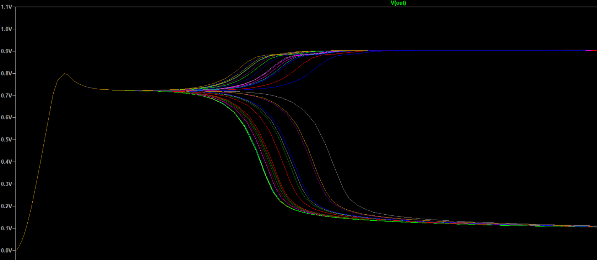
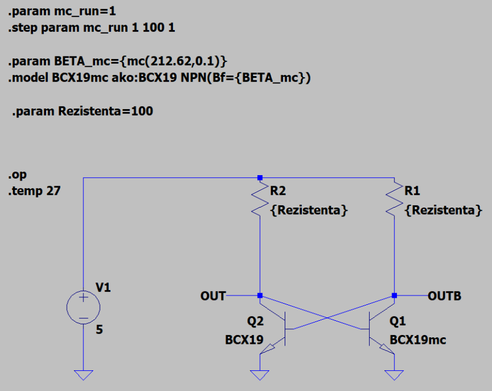
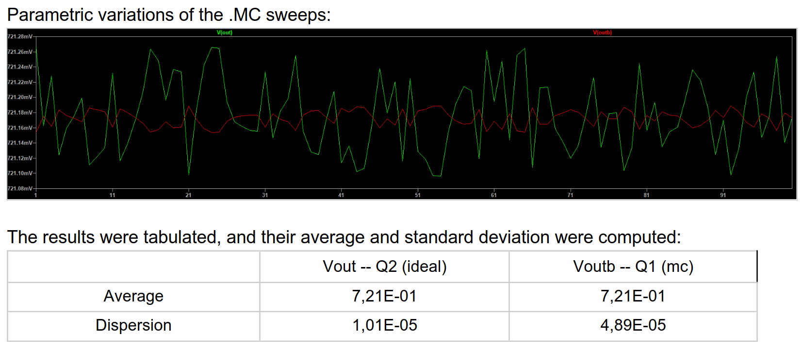
This engineering case study investigates a cross-coupled bipolar storage cell built using BCX19 NPN transistors and temperature-variant active loads. By combining operating point, AC small-signal, and transient Monte Carlo simulations, the research evaluates how ±10% transistor gain variations impact circuit stability, time constants, and transient settling times across thermal extremes.
Highlights
Monte Carlo Parameter Variance: Modeled a ±10% normal distribution on transistor gain in LTspice to quantify manufacturing imperfection impacts on node voltage dispersions and metastable state convergence.
Feedback Impedance and Time Constants: Derived analytical expressions for low-frequency dominant time constants, incorporating Miller capacitance effects and loop-gain feedback mechanics into the equivalent resistance.
Transient Settling Analysis: Evaluated transient step-response waveforms across thermal corners (0°C, 27°C, and 85°C), determining precise 90% settling time boundaries.
Device Reliability Insights: Demonstrated how component variance forces metastable states to bifurcate into distinct binary output rails, highlighting fault-tolerance vulnerabilities in discrete bipolar storage topologies.
IoT Cloud Weather Station
ESP8266 IoT monitoring station, tracks atmospheric parameters and streams over Wi-Fi to a cloud spreadsheet for real time visualization.
Hardware Seismic Duration Engine: Configured a 555 timer in astable mode with a pendulum sensor, counting 100ms pulse rising edges to accurately measure earthquake duration.
Multi-Sensor Integration: Interfaced DHT11 and BMP280 sensors to capture ambient temperature, relative humidity, atmospheric pressure, and altitude.
Cloud Telemetry Pipeline: Bundles sensor readouts into JSON packages every 5 seconds and transmits them over Wi-Fi via HTTP POST requests to Google Apps Script.
Automated Data Visualization: Routes incoming streams directly into a live Google Sheets dashboard for real-time charting and historical trend analysis.